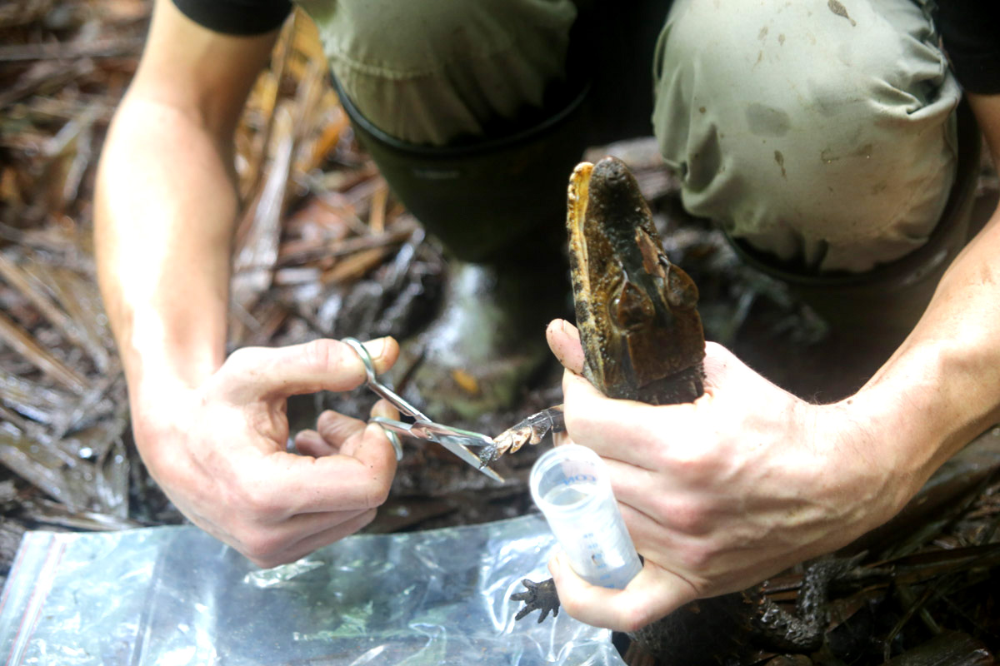
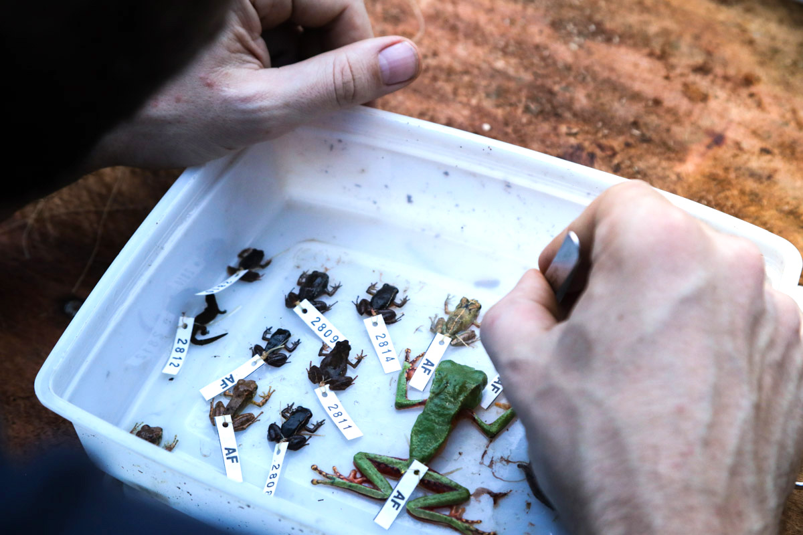
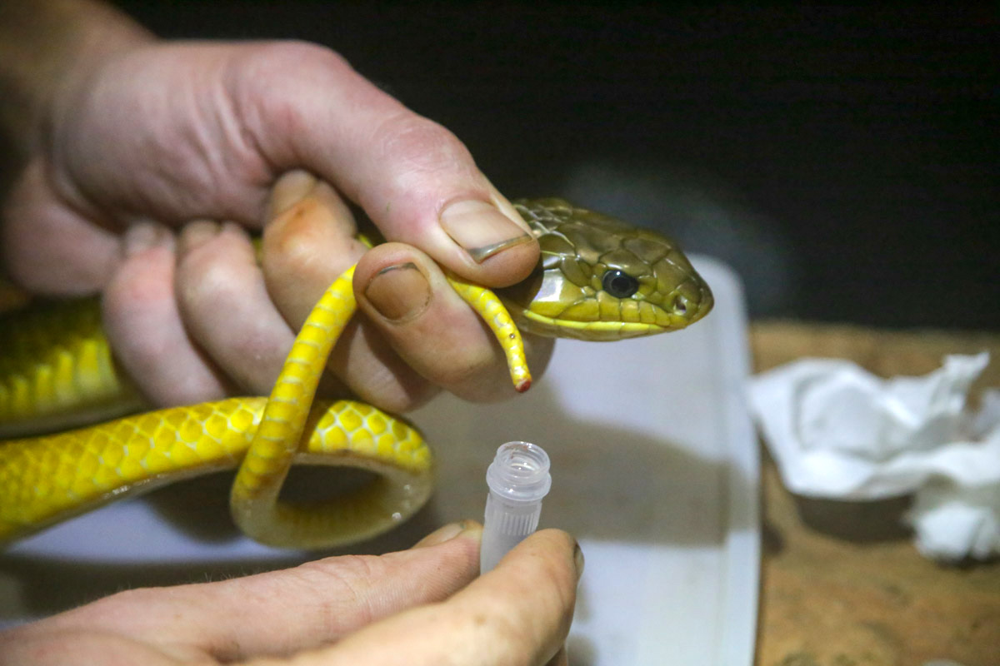
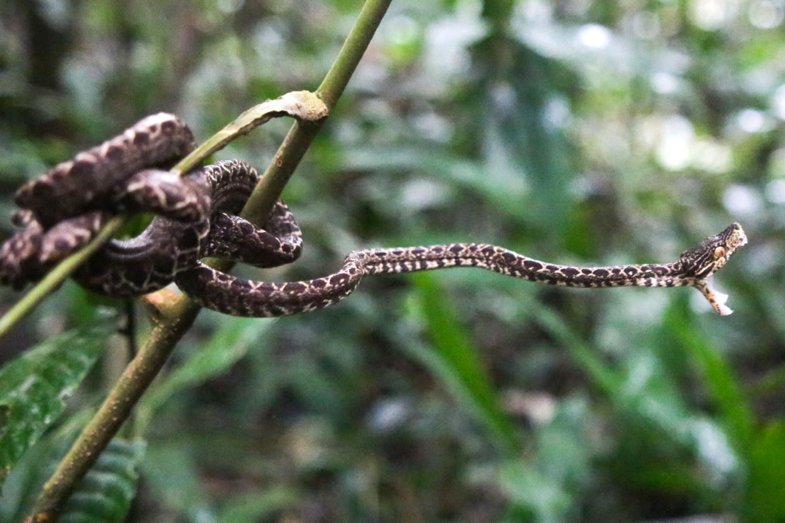
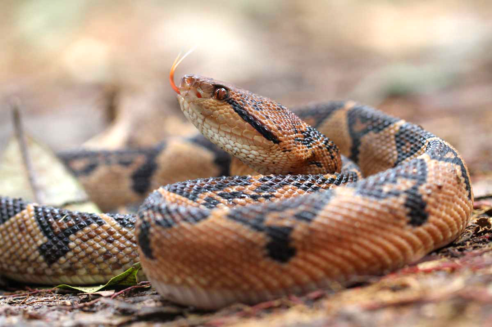

Ce mercredi 11 mars a sonné l’heure du relais entre les deux équipes scientifiques. La quasi-totalité des chercheurs ayant vécu « l’expérience Mitaraka » ont quitté le camp de base, immédiatement remplacés par une trentaine de nouveaux venus prêts à reprendre le travail entamé, mais aussi à explorer d’autres pans de la biodiversité. L’occasion aussi, pour les chercheurs sur le départ, de tirer un premier bilan de ces deux semaines de terrain.
L'hélicoptère n'en finit plus d'aller et de venir. A chaque voyage, une fournée de scientifiques humides et exténués est remplacée par une autre : des naturalistes encore propres, pour quelques heures au moins. C'est l'heure de la relève pour l'expédition scientifique, le camp de base accueille ses nouveaux locataires, seuls un médecin, deux botanistes et l’équipe en charge de la gestion du camp restant sur zone.
Après trois quarts d’heure de survol de la forêt, les nouveaux venus découvrent avec plaisir leur terrain de chasse pour les deux prochaines semaines. Cette rotation d’équipe a été décidée par Olivier Pascal, le responsable de ce volet terrestre, pour plusieurs raisons. « La plupart des protocoles, notamment des programmes d’écologie, sont calés sur deux semaines, note-t-il. De plus, on arrive relativement vite à saturer l’échantillonnage pour certains groupes comme les reptiles ou les amphibiens : on trouve rapidement un grand nombre d’espèces, puis il faut de plus en plus de temps pour trouver une espèce supplémentaire. »
Certaines spécialités ne sont ainsi pas représentées en seconde quinzaine, notamment l’herpétologie et l’arachnologie. Mais scinder les équipes en deux permet également d’avoir plus de disciplines présentes sur toute la durée de l’expédition. De nouveaux pans du vivant sont ainsi dorénavant explorés, comme les champignons, les poissons ou encore les lombrics.
-

Nicolas Vidal, herpétologue au Musée national d’histoire naturelle, prélève un bout d’écaille d’un petit caïman gris.
Ce changement d’équipe a été aussi l’occasion pour les scientifiques sur le départ de dresser un premier bilan, à chaud, de leur mission guyanaise. Si les entomologistes seront toujours largement représentés – six spécialités présentes –, ceux qui quittent le camp ont déjà bien avancé le travail de collecte, avec des dizaines de milliers d’insectes déjà capturés. Les araignées, elles, se comptent en centaines d’espèces collectées.
Pour Vincent Vedel, arachnologue à l’Institut national de la recherche agronomique (INRA), les espèces encore inconnues seront assurément nombreuses. « Un tiers de celles que j’ai attrapées, je ne le connais pas, avoue-t-il. Cela peut être des espèces décrites dans d’autres pays, mais pas en Guyane, mais aussi de nouvelles espèces ; et c’est certain qu’il y en aura. »
Parmi ces plus belles prises, attrapées le plus souvent de nuit, à la lueur de la frontale, l’arachnologue guyanais est particulièrement intéressé par les spécimens du genre Phoneutria, les araignées les plus venimeuses au monde. « Il y a huit espèces en Amérique latine, mais seulement deux décrites en Guyane »
, souligne Vincent Vedel. « Ici, nous avons trouvé une autre espèce seulement décrite au Brésil et au Venezuela, ce serait donc la première donnée pour la Guyane »
, s’enthousiasme-t-il.
Pour avoir la confirmation du nombre exact de nouvelles espèces découvertes lors de cette mission, il faudra attendre quelques mois, le temps que l’arachnologue trie cette montagne d’échantillons et envoie les spécimens les plus complexes à divers experts internationaux.
-

Vincent Vedel, arachnologue, passe ses journées et une partie de ses nuits à collecter des araignées dans son filet.
-

Les spécimens de grenouille les plus intéressants sont conservés pour rejoindre les collections de référence.

Du côté des amphibiens, Maël Dewynter et son collègue Antoine Fouquet sont eux aussi ravis de la récolte. « Nous avons recensé près de 60 espèces, c’est l’un des meilleurs scores réalisé lors d’une mission en Guyane française »
, se félicite Maël Dewynter, de la Fondation Biotope, organisme qui finance des programmes de conservation. Sur les 58 espèces identifiées au Mitaraka, de nombreuses ont déjà été aperçues en Guyane, mais ne sont pas encore décrites. « Pendant des années, la liste des grenouilles en Guyane était assez figée, reprend l’écologue. Les études génétiques ont cassé ce dogme en montrant que de nombreuses espèces qui se ressemblent beaucoup ne peuvent plus se reproduire entre elles depuis des millions d’années »
.
Pour cette raison, les scientifiques, qui auparavant se contentaient de photographier les individus capturés, ont prélevé cette fois-ci un échantillon qui servira de base aux études génétiques. La séquence ADN qui révélera les secrets de l’espèce sera ensuite mise à disposition des chercheurs du monde entier sur une banque de gènes en ligne. Mais même si l’espèce ne s’avère pas nouvelle, la collecter ici, au Mitaraka, contribue grandement à améliorer la connaissance des amphibiens et donc leur conservation, selon Maël Dewynter. « C’est important d’avoir des inventaires dans des sites éloignés pour connaître la répartition de chaque espèce et donc les menaces qui pèsent sur elles. »
Cette expédition sera ainsi fort utile – au même titre que d’autres missions en Guyane – à cet écologue tropical pour établir la liste rouge des espèces d’amphibiens menacées.
-

Un prélèvement sanguin d’une couleuvre de près de deux mètres pour de futures analyses génétiques.
-

Un boa de Cook passablement énervé démontre ses capacités d’attaque.
Nicolas Vidal, herpétologue au Muséum national d’histoire naturelle, repart lui avec, dans ses bagages, une soixantaine d’espèces de reptiles, dont 26 de serpents. Là aussi, la question du nombre de nouvelles espèces est prématurée. « La diversité des reptiles est souvent sous-estimée : certains sont similaires morphologiquement, mais l’ADN révèle de nouvelles espèces »
, raconte ce spécialiste de l’évolution moléculaire. « Ce que l’on a trouvé ici est a priori connu, mais on en saura plus d’ici à un mois ou deux, après le séquençage. »
Parmi les espèces connues, Nicolas Vidal s’était fixé deux objectifs pour cette mission : Bothrops taeniatus et Lachesis muta. Le premier, un petit serpent venimeux dont la rareté étonne tous les spécialistes, n’a été vu qu’une seule fois en Guyane : malgré tous les efforts déployés, l’animal est resté ici invisible. Le second, lui, a été capturé dès les premiers jours : un Lachesis muta juvénile, vite devenu la star de ce début d’expédition. Il faut dire que ce serpent est le Graal des herpétologues en Guyane : le plus grand crotale au monde (jusqu’à 3,5 mètres), disposant d’un venin foudroyant (75 % de mortalité après morsure), qui lui a conféré le surnom local de « Maître de la brousse ». « On sait très peu de chose sur son mode de vie et ses déplacements »
, avoue Nicolas Vidal, qui étudie depuis peu l’écologie de cette espèce en suivant par radiotracking des individus équipés d’émetteurs. Une très belle prise.
Yann Chavance
-

Lachesis muta, le plus grand crotale au monde au venin foudroyant.